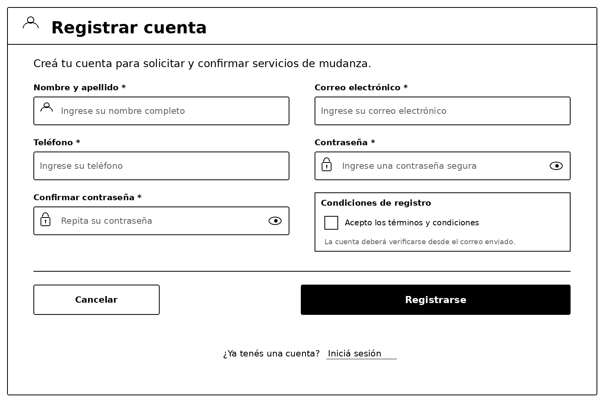
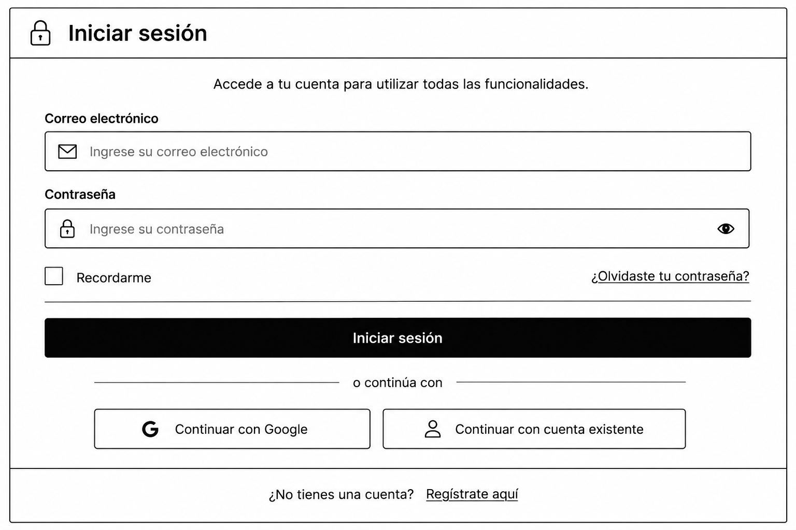
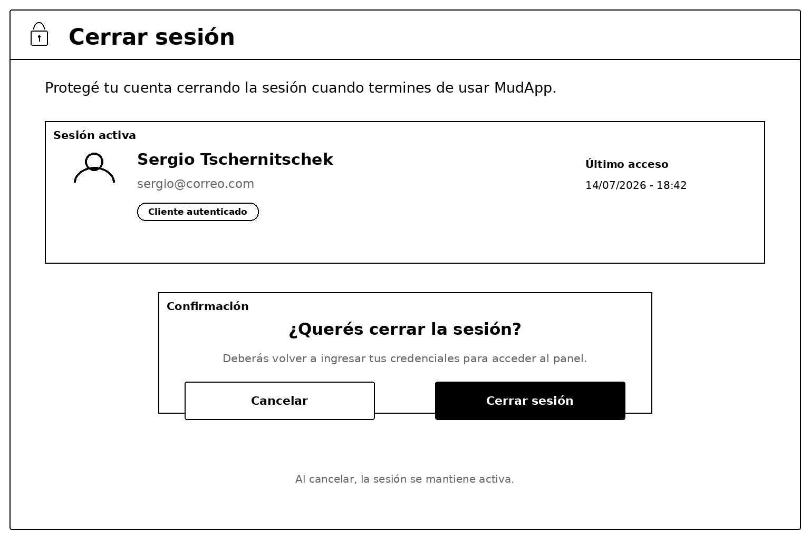
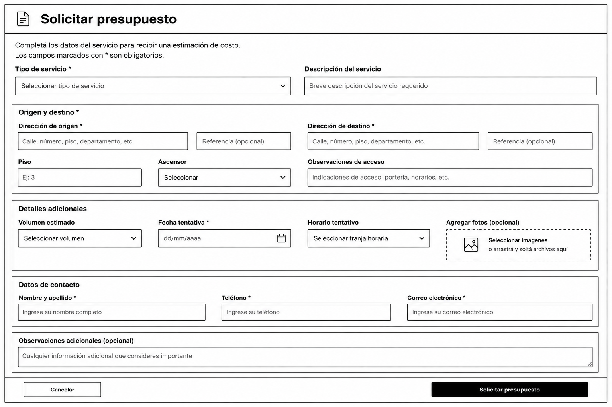
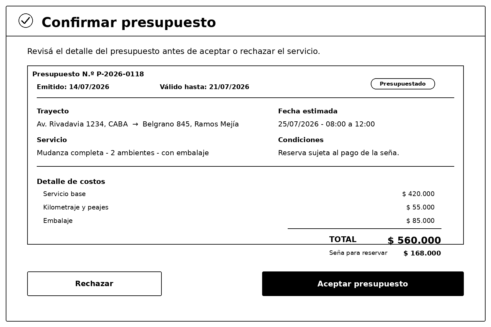
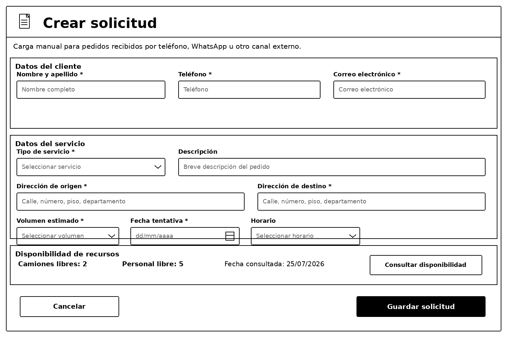
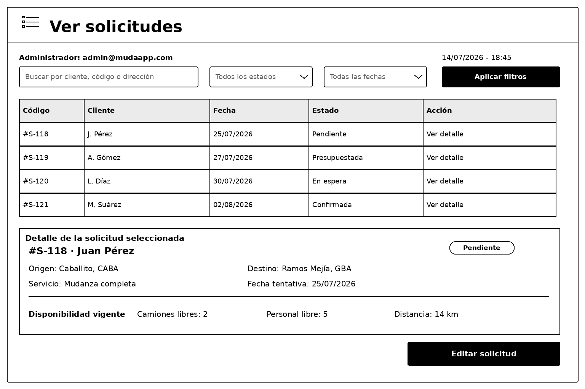
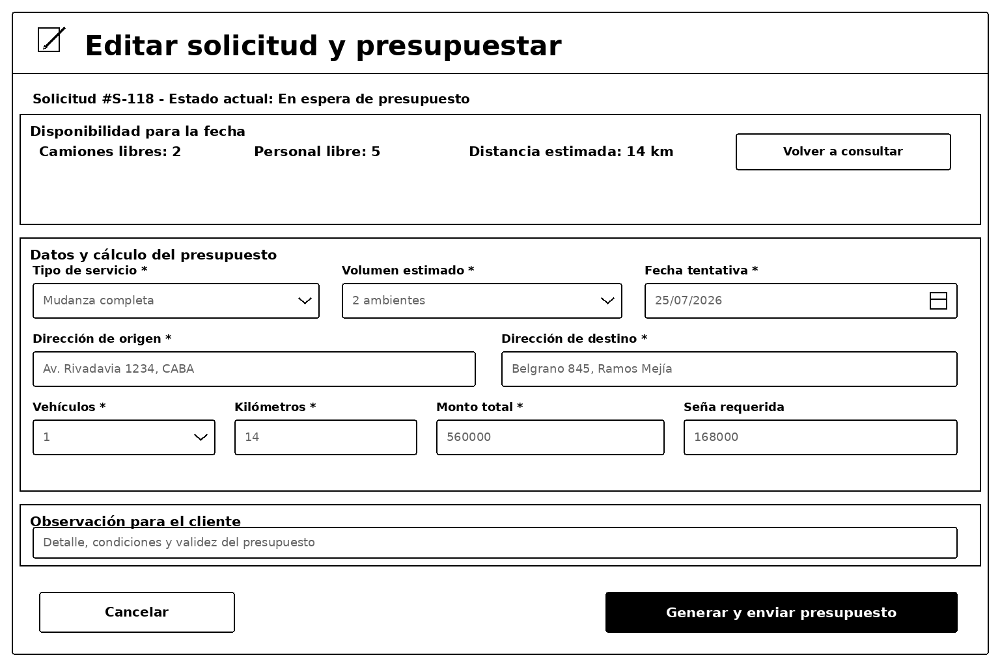
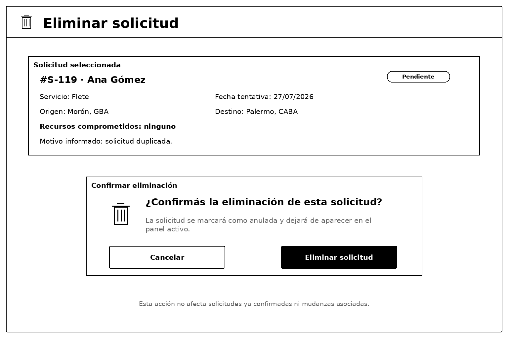
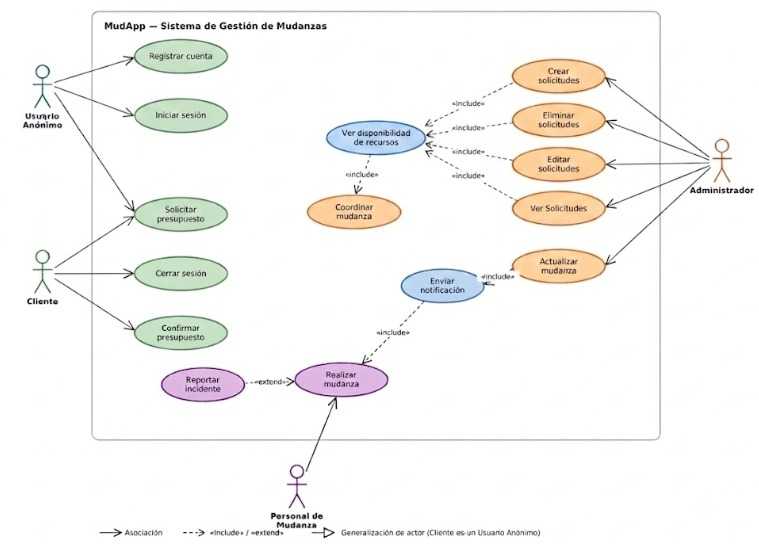

UNIVERSIDAD TECNOLÓGICA NACIONAL
Facultad Regional Haedo
Tecnicatura Universitaria en Programación
Actividad N° 1 — Planificación y Control del Cronograma
Actividad N° 2 — Modelado de Requisitos: Casos de Uso e Interfaces
Actividad N° 3 — Gestión Ágil y Presupuestación del Proyecto
Grupo 4 — Sistema de Gestión de una Empresa de Mudanzas
Sergio Tschernitschek · Santiago Vadone · Federico De Vivo
Sistema: MudaYa — MudApp
Metodología de Sistemas I
Junio — Julio de 2026
MudaYa es una empresa que opera en la República Argentina y se dedica a la prestación de servicios de mudanzas y fletes para clientes residenciales y comerciales del Área Metropolitana de Buenos Aires (AMBA).
A diferencia de un mero intermediario, MudaYa cuenta con flota propia de camiones y cuadrillas de personal capacitado, y ofrece distintos tipos de servicio:
Actualmente, la empresa gestiona buena parte de su operatoria de forma manual: los pedidos ingresan por teléfono y por WhatsApp, los presupuestos se arman en planillas y la asignación de camiones y personal se coordina en papel.
En el marco de su crecimiento —y, en particular, de la apertura de una nueva sucursal—, MudaYa ha decidido profesionalizar su gestión a través del desarrollo de un sistema informático propio, de nombre MudApp.
MudApp se compone de dos piezas que comparten la misma información:
Ambas piezas se comunican con un servicio web (web service) de provisión de datos que emplea un estándar de intercambio de información entre aplicaciones[^1] y centraliza los datos de clientes, solicitudes, presupuestos, recursos —camiones y personal— y mudanzas.
A través del sistema, un cliente podrá:
El administrador, desde el portal web, gestionará las solicitudes entrantes, verificará la disponibilidad de recursos, generará los presupuestos y coordinará cada mudanza confirmada, asignándole un camión y el personal necesario.
Finalmente, el personal de mudanza utilizará la aplicación para consultar las mudanzas que tiene asignadas y registrar, en terreno, el inicio y la finalización del servicio.
Un proceso de particular interés es el de registrar una solicitud de presupuesto para una mudanza.
Una vez activada por el cliente la opción correspondiente en el menú general de la aplicación, deberá indicar las direcciones de origen y destino, detallando los datos relevantes de cada domicilio:
A continuación, el cliente elegirá el tipo de servicio deseado e ingresará un detalle con la mayor cantidad de información posible acerca de los bienes a trasladar.
Podrá agregar las fotografías que considere, las cuales —por criterios de seguridad informática— solo podrán estar en formato .jpg y, por una gestión eficiente del almacenamiento, no podrán exceder:
El cliente proseguirá estableciendo el rango de fechas en el cual desea que se realice la mudanza e informará las formas de pago que está dispuesto a utilizar:
También podrá agregar un comentario textual con las observaciones que considere relevantes.
Al registrar efectivamente su solicitud, el cliente visualizará en la aplicación un mensaje de confirmación que contendrá el correspondiente código alfanumérico identificador, en estándar Unicode.
En cualquier momento, y mediante otra funcionalidad de MudApp, el cliente podrá consultar, para cada solicitud efectuada, el listado de presupuestos recibidos.
Cada presupuesto contendrá, entre otros datos:
Los presupuestos tienen una validez de 10 días corridos y, cumplido dicho plazo, caducan automáticamente.
Cuando el cliente tenga interés en alguno de ellos, podrá comunicarle al sistema la aceptación del presupuesto.
En ese caso, MudApp:
El presente caso de estudio sirve de base para la Actividad N° 2 —Modelado de Requisitos—.
El modelado funcional —Diagrama de Casos de Uso, especificaciones e interfaces tentativas— se desarrolla sobre los tres actores y las funcionalidades aquí descriptas.
[1] Son tecnologías de intercambio de información entre aplicaciones: SOAP (Simple Object Access Protocol), CORBA (Common Object Request Broker Architecture), REST (Representational State Transfer), etc. En el caso de MudApp se adopta una API de tipo REST.
Grupo 4: Mudanza y Apertura de una Nueva Sucursal Sergio Tschernitschek · Santiago Vadone · Federico De Vivo
| ID | Tarea | Recurso Asignado |
|---|---|---|
| 1.1 | Definición del alcance del nuevo local | Santiago Vadone |
| 1.2 | Relevamiento y búsqueda en campo de locales disponibles | Sergio Tschernitschek |
| 1.3 | Análisis del entorno comercial y competidores | Federico De Vivo |
| 1.4 | Inspección técnica preliminar de las estructuras | Santiago Vadone |
| 1.5 | Análisis económico de costos de refacción estimada | Federico De Vivo |
| HITO 1 | Relevamiento y análisis de opciones completados | Todos |
| 2.1 | Evaluación y matriz de selección del local definitivo | Sergio Tschernitschek |
| 2.2 | Gestión jurídica de contratos de alquiler | Santiago Vadone |
| 2.3 | Solicitud y tramitación de la habilitación municipal | Federico De Vivo |
| 2.4 | Tramitación de altas de servicios comerciales | Sergio Tschernitschek |
| HITO 2 | Local seleccionado y habilitado legalmente | Todos |
| 3.1 | Identificación y listado de refacciones necesarias | Santiago Vadone |
| 3.2 | Elaboración del pliego de condiciones técnicas | Federico De Vivo |
| 3.3 | Envío de pliegos y solicitud de presupuestos a contratistas | Sergio Tschernitschek |
| 3.4 | Evaluación técnica-económica de ofertas recibidas | Santiago Vadone |
| HITO 3 | Licitación cerrada y contratista preseleccionado | Todos |
| 4.1 | Adjudicación y firma de contrato con el proveedor | Federico De Vivo |
| 4.2 | Ejecución de las obras de refacción interna | Sergio Tschernitschek |
| 4.3 | Inspección de calidad y recepción de la obra | Santiago Vadone |
| HITO 4 | Infraestructura del local terminada al 100% | Todos |
| 5.1 | Relevamiento y selección de empleados a transferir | Federico De Vivo |
| 5.2 | Diseño y actualización de los nuevos puestos de trabajo | Sergio Tschernitschek |
| 5.3 | Redacción y firma de contratos laborales | Santiago Vadone |
| HITO 5 | Equipo de trabajo conformado y contratado | Todos |
| 6.1 | Logística de mudanza y traslado de equipamiento | Federico De Vivo |
| 6.2 | Configuración y armado de los puestos físicos de trabajo | Sergio Tschernitschek |
| 6.3 | Jornada de inducción y simulacro operativo | Santiago Vadone |
| HITO 6 | Inauguración y apertura oficial al público | Todos |
Se eligió ProjectLibre por las siguientes razones:
.xml / .pod), lo que facilita la interoperabilidad.El proyecto se descompuso en 6 sprints, 22 paquetes de trabajo y 6 hitos de cierre de etapa, totalizando 34 elementos en el cronograma.
| Sprint | Tareas | Hito de cierre |
|---|---|---|
| SPRINT 1 — Relevamiento y Análisis | 1.1 al 1.5 | Relevamiento y análisis completados |
| SPRINT 2 — Selección y Habilitación Legal |
2.1 al 2.4 | Local seleccionado y habilitado legalmente |
| SPRINT 3 — Licitación de Obras | 3.1 al 3.4 | Licitación cerrada y contratista preseleccionado |
| SPRINT 4 — Ejecución de Obras | 4.1 al 4.3 | Infraestructura del local terminada al 100% |
| SPRINT 5 — Gestión de Recursos Humanos |
5.1 al 5.3 | Equipo de trabajo conformado y contratado |
| SPRINT 6 — Puesta en Marcha | 6.1 al 6.3 | Inauguración y apertura oficial al público |
Todas las duraciones fueron estimadas en días hábiles, considerando una jornada de 8 horas de lunes a viernes.
Las relaciones de dependencia utilizadas son del tipo Fin a Inicio (FS): una tarea no puede comenzar hasta que su predecesora haya finalizado. Cuando una tarea tiene dos predecesoras, espera a que ambas terminen antes de iniciar.
Las tareas 1.3 y 1.4 se ejecutan en paralelo, ya que ambas dependen de 1.2. Lo mismo ocurre con 2.2 y 3.1, que corren en paralelo a partir de 2.1, y con 2.3 y 2.4, que dependen de 2.2. El Sprint 5 también comienza en paralelo desde 2.1.
| Duración total del proyecto | Fecha de inicio | Fecha de cierre |
|---|---|---|
| 63 días hábiles | 01/07/2026 | 25/09/2026 |
La Ruta Crítica es la secuencia de tareas más larga del proyecto. Cualquier retraso en una de estas tareas impacta directamente en la fecha de finalización.
1.1 → 1.2 → 1.4 → 1.5 → 2.1 → 3.1 → 3.2 → 3.3 → 3.4 → 4.1 → 4.2 → 4.3 → 6.1 → 6.2 → 6.3 → HITO final
| Tarea en Ruta Crítica | Duración |
|---|---|
| 1.1 — Definición del alcance del nuevo local | 3 días |
| 1.2 — Relevamiento y búsqueda en campo | 10 días |
| 1.4 — Inspección técnica preliminar | 4 días |
| 1.5 — Análisis económico de costos de refacción | 3 días |
| 2.1 — Evaluación y matriz de selección del local | 3 días |
| 3.1 — Identificación y listado de refacciones | 3 días |
| 3.2 — Elaboración del pliego de condiciones técnicas | 5 días |
| 3.3 — Solicitud de presupuestos a contratistas | 10 días |
| 3.4 — Evaluación técnico-económica de ofertas | 5 días |
| 4.1 — Adjudicación y firma de contrato con proveedor | 3 días |
| 4.2 — Ejecución de las obras de refacción interna | 5 días |
| 4.3 — Inspección de calidad y recepción de la obra | 3 días |
| 6.1 — Logística de mudanza y traslado de equipamiento | 3 días |
| 6.2 — Configuración y armado de puestos físicos | 2 días |
| 6.3 — Jornada de inducción y simulacro operativo | 1 día |
Impacto de un retraso de 1 día: si cualquiera de estas tareas se retrasa un solo día, la fecha de inauguración se corre del 25/09/2026 al 26/09/2026, retrasando todo el proyecto.
Holgura: 2 días hábiles
Esta tarea corre en paralelo con 1.4 (Inspección técnica preliminar), pero 1.4 es la que define el camino crítico porque su ruta es más larga. Sin embargo, 1.3 actúa como predecesora del HITO 1 junto con 1.5.
| Tarea | Finalización | Impacto |
|---|---|---|
| 1.3 — Análisis del entorno comercial | 24/07/2026 | El HITO 1 está determinado por 1.5 (28/07/2026) |
| 1.5 — Análisis económico de costos | 28/07/2026 | Define la fecha del HITO 1 |
Conclusión: 1.3 puede retrasarse hasta 2 días hábiles sin mover ninguna fecha del proyecto.
Holgura: aproximadamente 16 días hábiles
Esta tarea corre en paralelo con el Sprint 3 (3.1 → 3.4) y con el Sprint 5, todos iniciando a partir de 2.1. La rama 3.1 → 3.2 → 3.3 → 3.4 tarda 23 días, mientras que 2.2 tarda solo 7. La tarea 4.1 espera a la rama más larga (3.4), por lo que 2.2 no es crítica en la versión actualizada del proyecto.
| Tarea | Finalización | Impacto |
|---|---|---|
| 2.2 — Gestión jurídica de contratos | 11/08/2026 | 4.1 no puede iniciar antes del 03/09/2026 (bloqueada por 3.4) |
| 3.4 — Evaluación técnico-económica (bloqueo real) |
02/09/2026 | Define el inicio real de 4.1 |
Conclusión: 2.2 puede retrasarse hasta aproximadamente 16 días hábiles sin impactar la fecha de cierre del proyecto. Esta tarea ya no forma parte del camino crítico.
Holgura: 2 días hábiles
Esta tarea es predecesora de 6.3, junto con 6.2. Como 6.2 finaliza el 24/09/2026 y 2.3 finaliza el 22/09/2026, la tarea 6.3 queda bloqueada igualmente por 6.2.
| Tarea | Finalización | Impacto |
|---|---|---|
| 2.3 — Tramitación de habilitación municipal |
22/09/2026 | 6.3 no puede iniciar antes del 25/09/2026 |
| 6.2 — Configuración y armado de puestos |
24/09/2026 | Bloquea el inicio de 6.3 |
Conclusión: 2.3 puede retrasarse hasta 2 días hábiles sin impactar la fecha de cierre del proyecto.
Grupo 4 — Sistema de Gestión de una Empresa de Mudanzas Sergio Tschernitschek · Santiago Vadone · Federico De Vivo
Metodología de Sistemas I — Entrega
Para esta actividad partimos de la idea de una aplicación para gestionar una empresa de mudanzas y, sobre esa base, redactamos el caso de estudio de MudaYa (entregado como documento aparte). MudaYa es una empresa de mudanzas con flota y personal propios que, en el marco de la apertura de una nueva sucursal, decide desarrollar su propio sistema de gestión: MudApp.
A partir de ese caso de estudio modelamos los requisitos del sistema siguiendo los tres pasos de la consigna: el Diagrama de Casos de Uso, la especificación de cada caso de uso y las interfaces tentativas (ITA).
El flujo del negocio comienza con el presupuesto: el cliente solicita un presupuesto, la administración lo calcula y lo envía, y recién cuando el cliente lo confirma se crea la mudanza. El cálculo del presupuesto lo realiza el Administrador considerando volumen, distancia, vehículos y kilometraje.
Decidimos trabajar con cuatro actores, que cubren todo el ciclo del negocio:
Por qué «Iniciar sesión» pasó al Usuario Anónimo: quien inicia sesión es, por definición, alguien que todavía no tiene una sesión activa. El Cliente, en cambio, es justamente el actor que ya está autenticado. Modelar «Iniciar sesión» como un caso de uso del Cliente era conceptualmente inconsistente: mezclaba el estado de entrada (sin sesión) con el actor de salida (con sesión). Por eso ahora «Iniciar sesión» (CU-02) cuelga del Usuario Anónimo, junto con «Registrar cuenta» (CU-01).
| Tarea | Responsable |
|---|---|
| Caso de estudio (MudaYa / MudApp) | Todos |
| Diagrama de Casos de Uso (DCU) en Lucidchart | Federico De Vivo |
| Especificación de casos de uso | Sergio Tschernitschek |
| Interfaces Tentativas de Análisis (ITA) | Santiago Vadone |
| Análisis y relación con el cronograma (Act. 1) + armado final | Todos |
El siguiente diagrama representa los actores del sistema y sus casos de uso, junto con las relaciones de asociación, inclusión («include»), extensión («extend») y generalización de actores.
En el diagrama figuran funciones completas por actor. Las acciones parciales —elegir el tipo de servicio, ingresar direcciones, asignar camión, confirmar el inicio y fin del servicio, etc.— forman parte del flujo interno de cada caso de uso y no se modelan como casos de uso independientes.
El sistema contempla un plan anónimo, por lo que distinguimos dos actores del lado del usuario. El Usuario Anónimo (visitante sin cuenta) puede solicitar un presupuesto, registrarse e iniciar sesión. El Cliente es una especialización del Usuario Anónimo: hereda esas funciones y suma las que requieren sesión activa —cerrar sesión y confirmar el presupuesto—.
La relación «include» se usa cuando una función se reutiliza desde varios casos base: Ver disponibilidad de recursos (usada por «Crear solicitudes», «Ver solicitudes», «Editar solicitudes», «Eliminar solicitudes» y «Coordinar mudanza») y Enviar notificación (usada por «Ejecutar mudanza» y «Actualizar mudanza»).
La relación «extend» se usa para Reportar incidente, un comportamiento opcional que extiende a «Ejecutar mudanza».
!Figura 1 — Diagrama de Casos de Uso del sistema MudApp ()
Figura 1 — Diagrama de Casos de Uso del sistema MudApp, elaborado en Lucidchart (versión corregida: CRUD de solicitudes + Iniciar sesión en Usuario Anónimo).
| Actor | Casos de uso asociados (base) |
|---|---|
| Usuario Anónimo (visitante) | Solicitar presupuesto · Registrar cuenta · Iniciar sesión |
| Cliente (registrado) | Cerrar sesión · Confirmar presupuesto (+ hereda los del Usuario Anónimo) |
| Administrador | Crear solicitudes · Ver solicitudes · Editar solicitudes · Eliminar solicitudes · Coordinar mudanza · Actualizar mudanza |
| Personal de Mudanza | Consultar mudanzas asignadas · Ejecutar mudanza |
| Relación | Origen → Destino | Motivo |
|---|---|---|
| «include» | Crear solicitudes → Ver disponibilidad de recursos | Antes de dar de alta, se valida si hay recursos para la fecha. |
| «include» | Ver solicitudes → Ver disponibilidad de recursos | La consulta de una solicitud muestra también la disponibilidad vigente. |
| «include» | Editar solicitudes → Ver disponibilidad de recursos | Al presupuestar/editar se vuelve a chequear disponibilidad. |
| «include» | Eliminar solicitudes → Ver disponibilidad de recursos | Antes de dar de baja se corrobora si ya se comprometieron recursos. |
| «include» | Coordinar mudanza → Ver disponibilidad de recursos | Función reutilizada, misma consulta de recursos. |
| «include» | Ejecutar mudanza → Enviar notificación | Notifica al gerente la finalización. |
| «include» | Actualizar mudanza → Enviar notificación | Notifica el cambio de estado. |
| «extend» | Reportar incidente → Ejecutar mudanza | Comportamiento opcional durante la ejecución. |
| Generalización | Cliente ▷ Usuario Anónimo | El Cliente es un Usuario Anónimo autenticado: hereda sus casos de uso. |
Un Usuario Anónimo puede navegar, solicitar un presupuesto dejando sus datos de contacto e iniciar sesión si ya tiene una cuenta creada — sin necesidad de estar todavía autenticado, porque justamente ese es el objetivo del caso de uso. En cambio, confirmar el presupuesto —es decir, contratar la mudanza— requiere ya estar autenticado, por lo que es una función del Cliente.
Por eso «Registrar cuenta» (CU-01) e «Iniciar sesión» (CU-02) figuran como casos de uso del Usuario Anónimo, «Cerrar sesión» (CU-03) y «Confirmar presupuesto» (CU-05) quedan del lado del Cliente, y el Cliente se modela como una especialización del Usuario Anónimo.
Detallamos a continuación cada caso de uso base con la plantilla oficial. Los casos de uso incluidos y el extendido se resumen en la tabla del final de este paso.
Los flujos alternativos se numeran A1, A2, A3... e indican entre paréntesis el paso del flujo normal del que se desprenden.
| Nombre y tipo | Registrar cuenta — Base |
|---|---|
| Descripción general | El visitante (Usuario Anónimo) crea una cuenta a efectos de poder contratar servicios. El plan anónimo permite navegar y pedir presupuesto sin cuenta, pero contratar exige registro. |
| Actores | Principal: Usuario Anónimo (visitante). |
| Precondiciones | El visitante no posee una cuenta. |
| Flujo normal | 1. El visitante selecciona «Registrarse». 2. El sistema muestra el formulario de registro. 3. El visitante ingresa nombre, correo, teléfono y contraseña. 4. El visitante acepta los términos y confirma. 5. El sistema valida los datos, crea la cuenta y envía un correo de verificación. |
| Flujos alternativos | A1 (paso 4) — Cancelación: el visitante cancela; no se crea la cuenta. A2 (paso 3) — Correo ya registrado: el sistema avisa y ofrece iniciar sesión o recuperar la contraseña. A3 (paso 3) — Datos inválidos: el sistema marca los campos y pide corregirlos. |
| Post-condición | Queda creada una cuenta habilitada para iniciar sesión y, luego, contratar. |
| Nombre y tipo | Iniciar sesión — Base |
|---|---|
| Descripción general | El visitante (Usuario Anónimo) que ya posee una cuenta se identifica a efectos de pasar a operar como Cliente y acceder a las funciones que requieren sesión activa (por ejemplo, confirmar un presupuesto). |
| Actores | Principal: Usuario Anónimo. |
| Precondiciones | El visitante tiene una cuenta registrada y no tiene una sesión activa. |
| Flujo normal | 1. El visitante selecciona «Iniciar sesión». 2. El sistema muestra el formulario. 3. El visitante ingresa correo y contraseña. 4. El sistema valida las credenciales e inicia la sesión. |
| Flujos alternativos | A1 (paso 3) — Cancelación: el visitante cancela. A2 (paso 4) — Credenciales inválidas: el sistema informa y pide reintentar. A3 (paso 3) — Recuperar contraseña: el sistema envía un enlace de recuperación al correo. |
| Post-condición | El visitante queda autenticado, pasa a operar como Cliente y su sesión queda activa. |
| Nombre y tipo | Cerrar sesión — Base |
|---|---|
| Descripción general | El cliente finaliza su sesión activa a efectos de proteger el acceso a su cuenta. |
| Actores | Principal: Cliente. |
| Precondiciones | El cliente tiene una sesión activa. |
| Flujo normal | 1. El cliente selecciona «Cerrar sesión». 2. El sistema pide confirmación. 3. El cliente confirma. 4. El sistema cierra la sesión y vuelve a la vista pública. |
| Flujos alternativos | A1 (paso 3) — Cancelación: el cliente cancela y permanece con la sesión activa. |
| Post-condición | La sesión queda cerrada; las funciones que requieren cuenta dejan de estar disponibles hasta un nuevo inicio de sesión. |
| Nombre y tipo | Solicitar presupuesto — Base |
|---|---|
| Descripción general | El cliente solicita una estimación de costo a efectos de decidir si contrata el servicio, indicando el tipo de servicio, las direcciones de origen y destino, el volumen y la fecha tentativa. Disponible también para usuarios anónimos (plan anónimo); en ese caso el visitante deja sus datos de contacto. |
| Actores | Principal: Usuario Anónimo o Cliente. |
| Precondiciones | Ninguna obligatoria. Para confirmar el presupuesto luego, el usuario deberá estar registrado e iniciar sesión. |
| Flujo normal | 1. El actor selecciona «Solicitar presupuesto». 2. El sistema muestra el formulario. 3. El actor elige el tipo de servicio. 4. El actor ingresa las direcciones de origen y destino (piso, ascensor y observaciones de acceso). 5. El actor indica el volumen estimado y la fecha tentativa, y puede adjuntar fotos. 6. El actor confirma el pedido. 7. El sistema registra el pedido con estado «En espera de presupuesto» y lo deja disponible para el Administrador. El costo no se calcula automáticamente: lo calcula el Administrador (CU-08 · Editar solicitudes). |
| Flujos alternativos | A1 (paso 6) — Cancelación: el actor cancela el pedido. A2 (paso 4) — Datos incompletos: el sistema marca los campos y pide completarlos. A3 (paso 4) — Zona no cubierta: el destino está fuera del área; el sistema informa y no registra el pedido. |
| Post-condición | Pedido de presupuesto registrado, pendiente de cálculo por el Administrador. |
| Nombre y tipo | Confirmar presupuesto — Base |
|---|---|
| Descripción general | Una vez que el Administrador genera y envía el presupuesto, el cliente lo revisa a efectos de aceptarlo o rechazarlo. Si lo acepta, el sistema crea la mudanza asociada. |
| Actores | Principal: Cliente. |
| Precondiciones | Existe un presupuesto generado y asociado a un pedido del cliente (estado «Presupuestado»). El cliente inició sesión. |
| Flujo normal | 1. El cliente consulta sus presupuestos. 2. El sistema muestra el detalle (costo, fecha estimada, condiciones y validez). 3. El cliente acepta el presupuesto. 4. El sistema cambia el estado a «Confirmada» y crea la mudanza asociada. |
| Flujos alternativos | A1 (paso 3) — Rechazo: el cliente rechaza; el sistema marca el presupuesto como «Rechazado» y no crea la mudanza. A2 (paso 2) — Presupuesto vencido: el sistema informa el vencimiento y ofrece solicitar uno nuevo (deriva a CU-04). |
| Post-condición | El presupuesto queda «Confirmado» (o «Rechazado»); si se confirma, queda creada la mudanza en estado «Confirmada». |
| Nombre y tipo | Crear solicitudes — Base · «include» Ver disponibilidad de recursos |
|---|---|
| Descripción general | El Administrador registra manualmente una nueva solicitud de presupuesto a efectos de dejar constancia en el sistema de un pedido recibido por un canal no digital (teléfono, WhatsApp). |
| Actores | Principal: Administrador. |
| Precondiciones | El Administrador cuenta con los datos del cliente y del servicio, recibidos por un canal externo. |
| Flujo normal | 1. El Administrador selecciona «Nueva solicitud». 2. El sistema muestra el formulario de carga manual. 3. El Administrador ingresa los datos del cliente, tipo de servicio, direcciones, volumen y fecha tentativa. 4. El Administrador verifica los recursos disponibles para la fecha (include «Ver disponibilidad de recursos»). 5. El Administrador confirma la carga. 6. El sistema registra la solicitud con estado «En espera de presupuesto». |
| Flujos alternativos | A1 (paso 5) — Cancelación: el Administrador cancela; no se crea la solicitud. A2 (paso 3) — Datos incompletos: el sistema marca los campos y pide completarlos. |
| Post-condición | Queda creada una nueva solicitud, disponible para ser consultada y presupuestada. |
| Nombre y tipo | Ver solicitudes — Base · «include» Ver disponibilidad de recursos |
|---|---|
| Descripción general | El Administrador consulta el listado de solicitudes registradas, con su estado y detalle, a efectos de decidir sobre qué solicitud actuar. |
| Actores | Principal: Administrador. |
| Precondiciones | Existen solicitudes registradas. |
| Flujo normal | 1. El Administrador accede al panel de solicitudes. 2. El sistema lista las solicitudes con su estado (pendiente, en espera, presupuestada, confirmada, etc.). 3. El Administrador selecciona una solicitud. 4. El sistema muestra el detalle completo, junto con la disponibilidad de recursos vigente para la fecha (include «Ver disponibilidad de recursos»). |
| Flujos alternativos | A1 (paso 2) — Sin resultados: no hay solicitudes que coincidan con el filtro aplicado; el sistema informa la lista vacía. |
| Post-condición | Información de la o las solicitudes consultada; no se modifican datos. |
| Nombre y tipo | Editar solicitudes — Base · «include» Ver disponibilidad de recursos |
|---|---|
| Descripción general | El Administrador modifica los datos de una solicitud existente y, cuando corresponde, calcula el monto del presupuesto (según volumen, distancia, tipo de servicio, vehículos y kilometraje) a efectos de enviarlo al cliente. |
| Actores | Principal: Administrador. |
| Precondiciones | Existe una solicitud registrada, pendiente de presupuesto o de corrección. |
| Flujo normal | 1. El Administrador selecciona una solicitud. 2. El sistema muestra el detalle actual. 3. El Administrador verifica los recursos disponibles para la fecha (include «Ver disponibilidad de recursos»). 4. El Administrador modifica los datos que correspondan y/o calcula el monto del presupuesto. 5. El Administrador confirma los cambios. 6. El sistema guarda la solicitud actualizada (estado «Presupuestado», si se cargó un monto) y notifica al cliente por correo. |
| Flujos alternativos | A1 (paso 5) — Cancelación: el Administrador cancela la operación sin guardar. A2 (paso 3) — Sin recursos disponibles: deja la solicitud «En espera» e informa una fecha alternativa. |
| Post-condición | La solicitud queda actualizada y, si se presupuestó, a la espera de confirmación del cliente, quien fue notificado. |
| Nombre y tipo | Eliminar solicitudes — Base · «include» Ver disponibilidad de recursos |
|---|---|
| Descripción general | El Administrador da de baja una solicitud que no debe continuar en el circuito (duplicada, fuera de alcance o desistida por el cliente). |
| Actores | Principal: Administrador. |
| Precondiciones | Existe una solicitud registrada que aún no fue confirmada por el cliente. |
| Flujo normal | 1. El Administrador selecciona una solicitud. 2. El sistema muestra el detalle, junto con la disponibilidad de recursos comprometida (include «Ver disponibilidad de recursos»), y solicita confirmación de baja. 3. El Administrador confirma la eliminación. 4. El sistema elimina (marca como anulada) la solicitud. |
| Flujos alternativos | A1 (paso 3) — Cancelación: el Administrador cancela; la solicitud permanece sin cambios. A2 (paso 1) — Solicitud no eliminable: ya fue confirmada por el cliente y tiene una mudanza asociada; el sistema impide la baja. |
| Post-condición | La solicitud queda eliminada (o anulada) y ya no forma parte del panel activo. |
| Nombre y tipo | Coordinar mudanza — Base · «include» Ver disponibilidad de recursos |
|---|---|
| Descripción general | El Administrador organiza una mudanza confirmada a efectos de dejarla lista para ejecutarse: asigna camión y personal disponibles y programa fecha y horario. |
| Actores | Principal: Administrador. Secundario: Personal de Mudanza. |
| Precondiciones | Existe una mudanza con presupuesto confirmado (estado «Confirmada»). |
| Flujo normal | 1. El Administrador selecciona una mudanza confirmada. 2. El sistema muestra los datos de la mudanza. 3. El Administrador consulta la disponibilidad de camión y personal para la fecha (include «Ver disponibilidad de recursos»). 4. El Administrador asigna el camión. 5. El Administrador asigna uno o varios operarios. 6. El Administrador define fecha y horario. 7. El sistema registra la programación y cambia el estado a «Programada». |
| Flujos alternativos | A1 (paso 6) — Cancelación: el Administrador cancela la coordinación. A2 (paso 3) — Recurso no disponible: el sistema impide la asignación y sugiere otra fecha o recurso. |
| Post-condición | Mudanza «Programada», con camión, personal y fecha asignados. |
| Nombre y tipo | Consultar mudanzas asignadas — Base |
|---|---|
| Descripción general | El Personal de Mudanza consulta, al comenzar la jornada, el listado de mudanzas «Programadas» a su nombre a efectos de conocer su trabajo del día antes de salir a ejecutarlo. |
| Actores | Principal: Personal de Mudanza. |
| Precondiciones | El personal inició sesión en la aplicación móvil. |
| Flujo normal | 1. El personal accede a la sección «Mudanzas asignadas». 2. El sistema muestra la fecha y hora actuales, y el usuario logueado. 3. El sistema lista las mudanzas «Programadas» para ese personal en el día, con origen, destino y horario. 4. El personal selecciona una mudanza de la lista. 5. El sistema muestra el detalle del viaje seleccionado (trayecto, horario, marcas de tiempo). |
| Flujos alternativos | A1 (paso 3) — Sin trabajos asignados: no hay mudanzas programadas para ese personal en el día; el sistema informa la lista vacía. |
| Post-condición | Información de la mudanza consultada; no se modifica ningún dato ni estado. Para actuar sobre ella (iniciar, ejecutar, finalizar), el personal continúa con CU-12 · Ejecutar mudanza. |
| Nombre y tipo | Ejecutar mudanza — Base · «include» Enviar notificación · «extend» Reportar incidente |
|---|---|
| Descripción general | El Personal de Mudanza ejecuta en terreno la mudanza previamente consultada (CU-11), a efectos de completar el servicio asignado. Dentro de este caso de uso se gestionan los estados: confirma el inicio (pasa a «En curso») y la finalización (pasa a «Finalizada»). Al finalizar, el sistema notifica al Administrador/gerente. |
| Actores | Principal: Personal de Mudanza. Secundario: Cliente. |
| Precondiciones | El personal consultó la mudanza (CU-11) y ésta se encuentra «Programada» a su nombre para la fecha. |
| Flujo normal | 1. Al llegar al origen, el personal confirma el inicio del servicio; el sistema cambia el estado a «En curso». 2. El personal ejecuta la mudanza (carga, traslado y descarga). 3. Al terminar, confirma la finalización; el sistema cambia el estado a «Finalizada». 4. El sistema notifica al Administrador/gerente que la mudanza finalizó (include «Enviar notificación»). |
| Flujos alternativos | A1 (paso 2) — Reportar incidente (extend): durante la ejecución el personal registra una novedad; el sistema la guarda y mantiene «En curso». A2 (paso 1) — Reprogramación: si no puede iniciarse, deriva a «Actualizar mudanza» (CU-13) para marcarla «Reprogramar»; se aborta el flujo. |
| Post-condición | La mudanza queda «Finalizada», con marca de inicio y de fin; se notificó al Administrador. |
| Nombre y tipo | Actualizar mudanza — Base · «include» Enviar notificación |
|---|---|
| Descripción general | El Administrador cambia el estado de una mudanza a efectos de reflejar novedades operativas: reprogramación, cancelación, no finalización o reemplazo de personal. Permite además registrar quién realizó realmente la mudanza cuando hubo cambios de cuadrilla durante el proceso. Cada actualización dispara una notificación por correo. |
| Actores | Principal: Administrador. (Origen de la novedad: Personal de Mudanza.) |
| Precondiciones | Existe una mudanza registrada en un estado posterior a «Confirmada». |
| Flujo normal | 1. El Administrador selecciona la mudanza a actualizar. 2. El sistema muestra el estado actual y la cuadrilla asignada. 3. El Administrador modifica el estado (p. ej. «Reprogramada», «Cancelada», «No finalizada») y/o registra el personal que realmente la ejecutó. 4. El Administrador confirma la actualización. 5. El sistema guarda los cambios y envía una notificación por correo (include «Enviar notificación»). |
| Flujos alternativos | A1 (paso 4) — Cancelación: el Administrador cancela la operación sin guardar. A2 (paso 3) — Transición inválida: el sistema impide un cambio de estado no permitido e informa el motivo. |
| Post-condición | La mudanza queda con su estado y su cuadrilla real actualizados; se notificó al Administrador/gerente. |
| Caso de uso | Tipo / relación | Descripción | Post-condición |
|---|---|---|---|
| Ver disponibilidad de recursos | Incluido (Crear, Ver, Editar y Eliminar solicitudes; Coordinar mudanza) | El sistema muestra los camiones y el personal libres para una fecha dada. | Información de disponibilidad consultada. |
| Enviar notificación | Incluido (Ejecutar mudanza; Actualizar mudanza) | El sistema envía un correo al administrador/gerente informando la acción realizada (registro, cambio de estado, reemplazo de personal). | Notificación enviada. |
| Reportar incidente | Extendido (extiende Ejecutar mudanza) | Durante la ejecución, el personal registra una novedad sin interrumpir el caso base. | Incidente registrado; la mudanza sigue «En curso». |
Cada interfaz lleva el mismo número que su caso de uso (ITA-0X ↔ CU-0X) y se corresponde con los pasos de su flujo normal.









En la Actividad N° 1 planificamos el proyecto «Mudanza y Apertura de una Nueva Sucursal» de MudaYa: 6 fases, 22 paquetes de trabajo y 6 hitos, con una duración total de 63 días hábiles (01/07/2026 → 25/09/2026).
La Actividad N° 2 modela el sistema (MudApp) que esa nueva sucursal usará para operar: la Actividad 1 define cuándo y cómo abre la sucursal, y la Actividad 2 define qué tiene que hacer el sistema que usará desde el día uno.
El DCU agrupa la funcionalidad en tres módulos, cada uno vinculado con tareas concretas del cronograma:
| Módulo funcional | Casos de uso | Tareas del cronograma (Act. 1) |
|---|---|---|
| Gestión comercial (Usuario Anónimo / Cliente) | Solicitar presupuesto · Registrar cuenta · Iniciar sesión · Cerrar sesión · Confirmar presupuesto | Atención al público de la nueva sucursal — se prueba en la Fase 6 (Puesta en Marcha), tarea 6.3 (inducción y simulacro operativo). |
| Gestión operativa (Administrador) | Crear solicitudes · Ver solicitudes · Editar solicitudes · Eliminar solicitudes · Coordinar mudanza · Actualizar mudanza | Coordinación de recursos — se apoya en la Fase 5 (5.1–5.3, conformación del equipo) y en 6.1 (logística y traslado de equipamiento). |
| Ejecución en terreno (Personal) | Consultar mudanzas asignadas · Ejecutar mudanza · Reportar incidente | Trabajo de las cuadrillas — se relaciona con 6.2 (armado de puestos) y 6.3 (simulacro operativo). |
Si sumáramos el desarrollo de MudApp al cronograma, lo más razonable sería que corriera en paralelo a las Fases 3 y 5 y que estuviera terminado antes del HITO 6, para que el simulacro operativo (6.3) sirviera también para probar el sistema.

Figura 1 — Diagrama de Casos de Uso del sistema MudApp
Grupo 4: Mudanza y Apertura de una Nueva Sucursal Sergio Tschernitschek · Santiago Vadone · Federico De Vivo
Metodología de Sistemas I — Entrega: 25 de junio de 2026
Las siguientes Historias de Usuario fueron elaboradas tomando como base el Diagrama de Casos de Uso y las ITA de la Actividad N° 2.
Cubren los flujos principales del sistema MudApp (MudaYa), organizados en tres módulos funcionales.
Escenario 1: Registro exitoso
Escenario 2: Correo ya existente
ejemplo@correo.com ya está registrado.Escenario 1: Inicio de sesión correcto
Escenario 2: Credenciales inválidas
Escenario 1: Envío exitoso de la solicitud
Escenario 2: Validación de archivos adjuntos
.jpg.Escenario 1: Solicitud dentro de la zona de cobertura
Escenario 2: Bloqueo por zona no cubierta
Escenario 1: Aceptación exitosa de presupuesto válido
Escenario 2: Intento de aceptar un presupuesto vencido
Escenario 1: Generación y guardado de presupuesto
Escenario 1: Coordinación exitosa con recursos disponibles
Escenario 2: Alerta por recursos insuficientes
Escenario 1: Visualización del servicio diario
Escenario 1: Inicio de servicio
Escenario 2: Reporte de incidente
Escenario 3: Finalización del servicio
Los costos se calcularon en base a la EDT de la Actividad N° 1, vinculando recursos del cronograma con valores estimados de mercado —pesos argentinos, 2026—. La tarifa diaria surge de dividir el sueldo mensual estimado por 21 días hábiles.
| Cargo | $ / Día | Días | Monto Total |
|---|---|---|---|
| MARKETING | $ 57.142 | 8 | $ 457.136 |
| RRHH | $ 66.666 | 14 | $ 933.324 |
| CONTRATISTA | $ 190.476 | 13 | $ 2.476.188 |
| CONTADOR | $ 64.661 | 4 | $ 258.644 |
| ABOGADO | $ 95.238 | 21 | $ 1.999.998 |
| PO | $ 114.285 | 22 | $ 2.514.270 |
| TESORERO | $ 71.428 | 4 | $ 285.712 |
| TEC. SEG E HIG | $ 61.904 | 5 | $ 309.520 |
| SYS ADMIN | $ 76.190 | 2 | $ 152.380 |
| SUBTOTAL RRHH | 93 | $ 9.387.172 |
Fórmula: Monto Total = ($ / Día) × Cantidad de días asignados en el cronograma.
| Ítem | Cant. | $ Unitario | Subtotal |
|---|---|---|---|
| PC Desktop (Core i5, 8 GB RAM, SSD 256 GB) | 20 | $ 350.000 | $ 7.000.000 |
| Monitor 24" Full HD | 20 | $ 115.000 | $ 2.300.000 |
| Teclado + Mouse inalámbrico | 20 | $ 18.000 | $ 360.000 |
| Impresora multifunción láser | 2 | $ 190.000 | $ 380.000 |
| Switch 24 puertos | 1 | $ 110.000 | $ 110.000 |
| Router WiFi empresarial | 1 | $ 65.000 | $ 65.000 |
| UPS 1000 VA (1 c/3 puestos) | 7 | $ 85.000 | $ 595.000 |
| Servidor NAS / File Server | 1 | $ 450.000 | $ 450.000 |
| TOTAL HARDWARE | $ 11.260.000 |
| Recurso | Cant. | Costo Unitario | Monto Total |
|---|---|---|---|
| Hosting y Cloud (3 meses) | 1 | $ 45.000 | $ 45.000 |
| Licencias de Software | 1 | $ 35.000 | $ 35.000 |
| Hardware y Equipamiento | — | — | $ 11.260.000 |
| Insumos de Oficina | 1 | $ 25.000 | $ 25.000 |
| Dominio y Certificado SSL | 1 | $ 12.000 | $ 12.000 |
| SUBTOTAL MATERIALES | $ 11.377.000 |
| Categoría | Monto Total |
|---|---|
| Recursos Humanos | $ 9.387.172 |
| Recursos Materiales | $ 11.377.000 |
COSTO TOTAL DEL PROYECTO: $ 20.764.172 — pesos argentinos, estimación 2026
La ruta crítica es la cadena secuencial completa: todos los sprints están encadenados mediante dependencias Fin-a-Inicio (FS), por lo que cualquier demora retrasa directamente la fecha de apertura del local.
Escenario analizado: retraso de 5 días hábiles en la tarea 4.2 — Ejecución de obras de refacción interna (Sprint 7, CONTRATISTA).
Se elige esta tarea porque el CONTRATISTA es el recurso de mayor costo diario —$190.476 por día— y los retrasos en obras civiles son el riesgo más frecuente en este tipo de proyectos.
| Concepto | Cálculo | Monto |
|---|---|---|
| Costo extra CONTRATISTA (5 días) | 5 días × $ 190.476 / día | $ 952.380 |
| Presupuesto original | $ 20.764.172 | |
| Presupuesto con desvío | $ 21.716.552 | |
| Incremento porcentual | $ 952.380 / $ 20.764.172 | +4,6 % |
Adquirir solo los equipos necesarios para la apertura —10 puestos— y completar hasta 20 en el primer mes operativo.
Ahorro estimado en inversión inicial: $5.630.000.
Reemplazar la compra única de licencias —$35.000— por un modelo de suscripción mensual compartida, reduciendo el desembolso inicial sin afectar la funcionalidad de ninguna HU.
En el Sprint 2 las tareas 1.4 y 1.5 ya corren en paralelo. Extender este modelo a otros sprints viables reduciría el tiempo total y el costo de coordinación del PO.
El Abogado representa $1.999.998 —21 días—. Negociar un honorario fijo por las habilitaciones —Sprints 3 y 4— podría reducir ese rubro hasta un 15 %, sin impacto en las HU que dependen de los trámites legales.
La Actividad N° 3 cierra el ciclo de análisis iniciado en la Actividad N° 1 —planificación temporal, EDT y ruta crítica— y profundizado en la Actividad N° 2 —modelado funcional, Casos de Uso e ITA—.
La articulación de las tres dimensiones —tiempo, alcance y costo— permite una visión integral y coherente del proyecto MudApp.
El cronograma ágil —9 sprints, 87 días hábiles— define con precisión cuántos días trabaja cada recurso, lo que permite calcular el costo de RRHH con exactitud: $9.387.172 para 93 días-hombre totales. Sin un cronograma detallado, cualquier estimación sería especulativa.
Las 9 HU —HU-01 a HU-09— mapean directamente los Casos de Uso de la Actividad N° 2 y determinaron los recursos materiales necesarios: 20 puestos equipados, software, red e infraestructura cloud —$11.377.000 en materiales—.
Un retraso de 5 días en la tarea de obras civiles —Sprint 7— implica un sobrecosto de $952.380, equivalente a +4,6 %. Esto refuerza la necesidad de monitorear las tareas del CONTRATISTA y tener un plan de contingencia ante demoras en obra.
El proyecto requiere una inversión total estimada de $20.764.172, distribuida en 87 días hábiles —1 de julio al 29 de octubre de 2026—.
La metodología ágil —Scrum— permite absorber cambios de alcance entre sprints sin comprometer la calidad de las HU ya definidas.